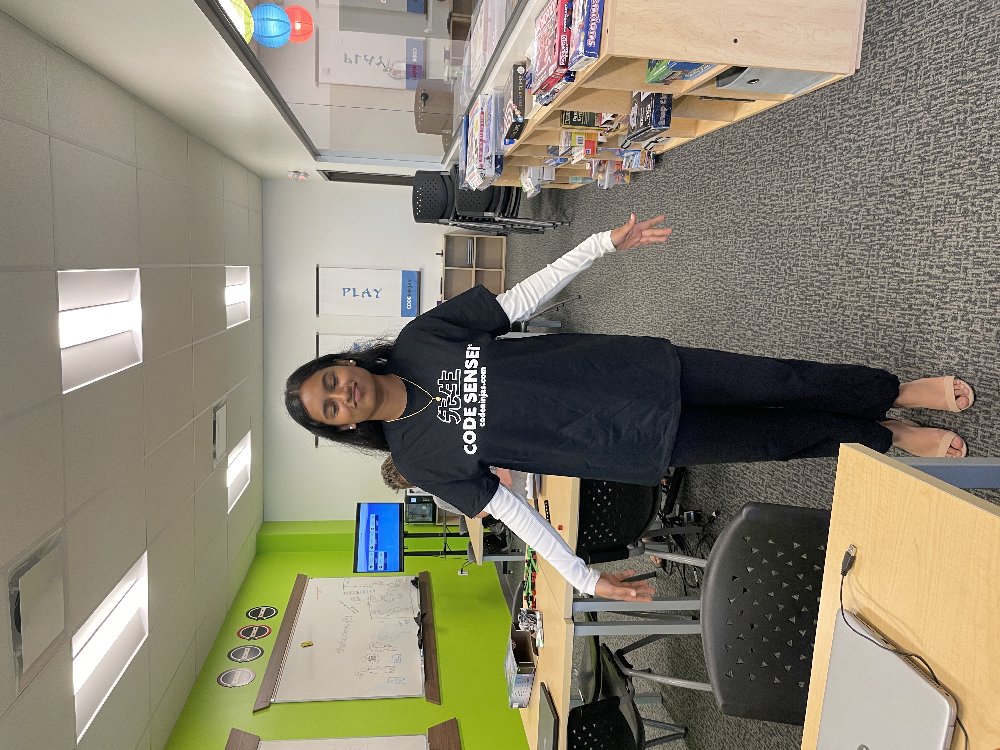
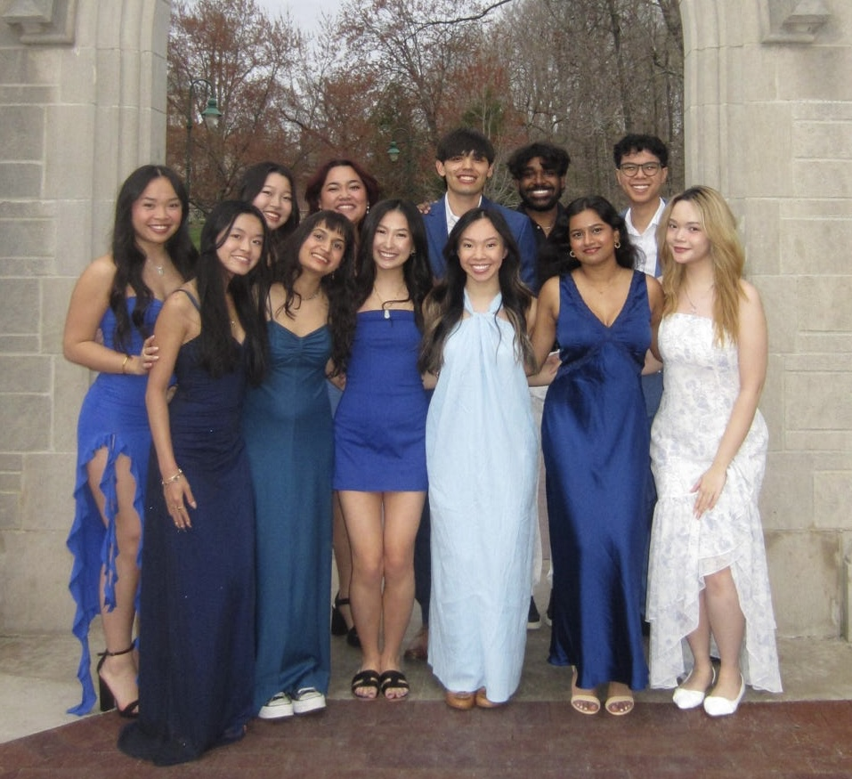
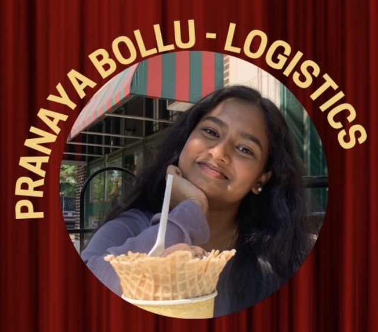

Career Experience
My professional experiences have helped me develop technical, leadership, communication, and problem-solving skills. Each role has contributed to my growth as an Information Technology student and prepared me for future career opportunities.

Coding Instructor
Code Ninjas
Dates: 2024 - Present
I teach students programming concepts through interactive coding lessons and projects. I help students understand programming, debug errors, and develop confidence using technology.
Major Accomplishments: Improved my ability to explain technical concepts, mentor students, and solve programming challenges.
This experience strengthened my communication and leadership skills. Teaching programming helped me understand how important patience, teamwork, and clear explanations are when working in technology.

Asian American Association
Programming Chair
Dates: 2025 - Present
I help plan cultural and social events by creating ideas, organizing activities, communicating with members, and supporting successful student programs.
Major Accomplishments: Helped create event ideas, increase student engagement, and support organization activities.
This leadership role improved my project planning and collaboration skills. It taught me how to manage responsibilities, communicate with teams, and organize projects effectively.

TigerHacks
Technology Participant
Dates: 2024 - Present
I participate in technology events focused on programming, innovation, and collaboration. I work with others to explore technology solutions and improve development skills.
Major Accomplishments: Expanded my programming knowledge and gained experience working with technology-focused teams.
This experience helped me become more comfortable solving problems with technology. It improved my creativity, teamwork, and ability to learn new tools quickly.

Campus Activities Programming Board
Student Leader
Dates: 2025 - Present
I assist with planning campus events and creating engaging experiences for students. I collaborate with team members to organize activities and manage event details.
Major Accomplishments: Contributed event ideas, improved organization skills, and worked with diverse groups of students.
This role helped me develop stronger organization and teamwork skills. It showed me how successful projects require planning, communication, and collaboration.